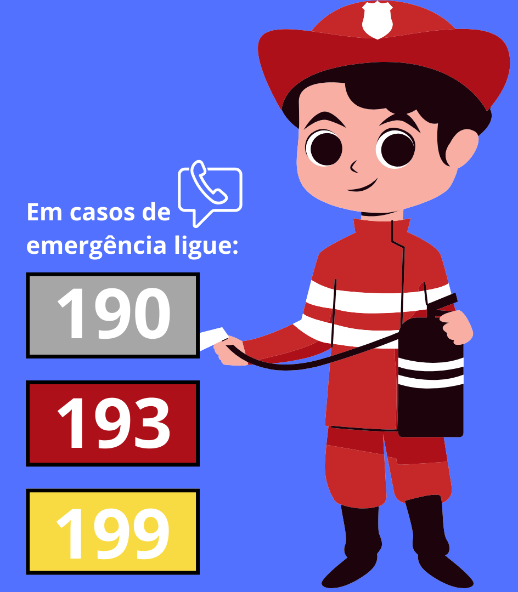
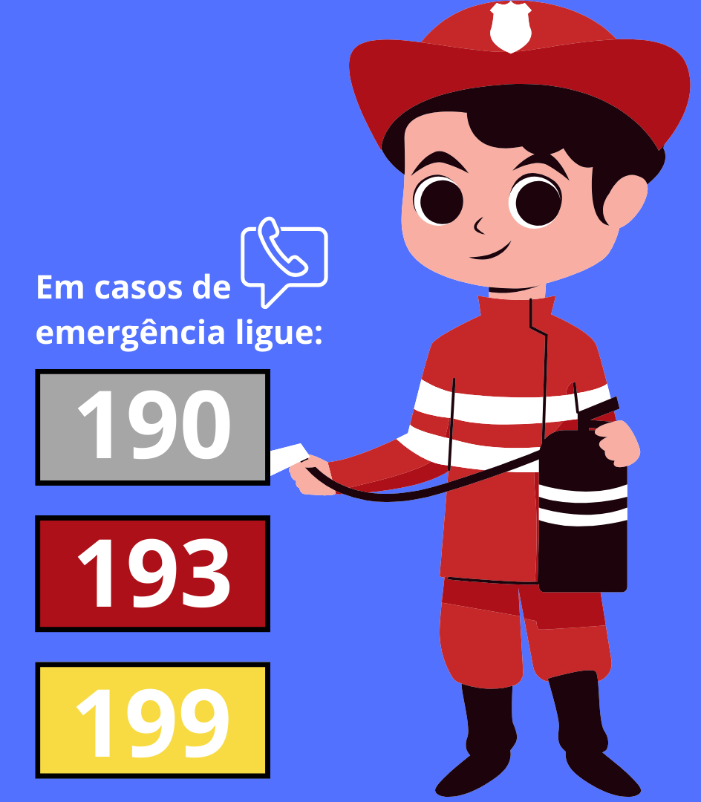
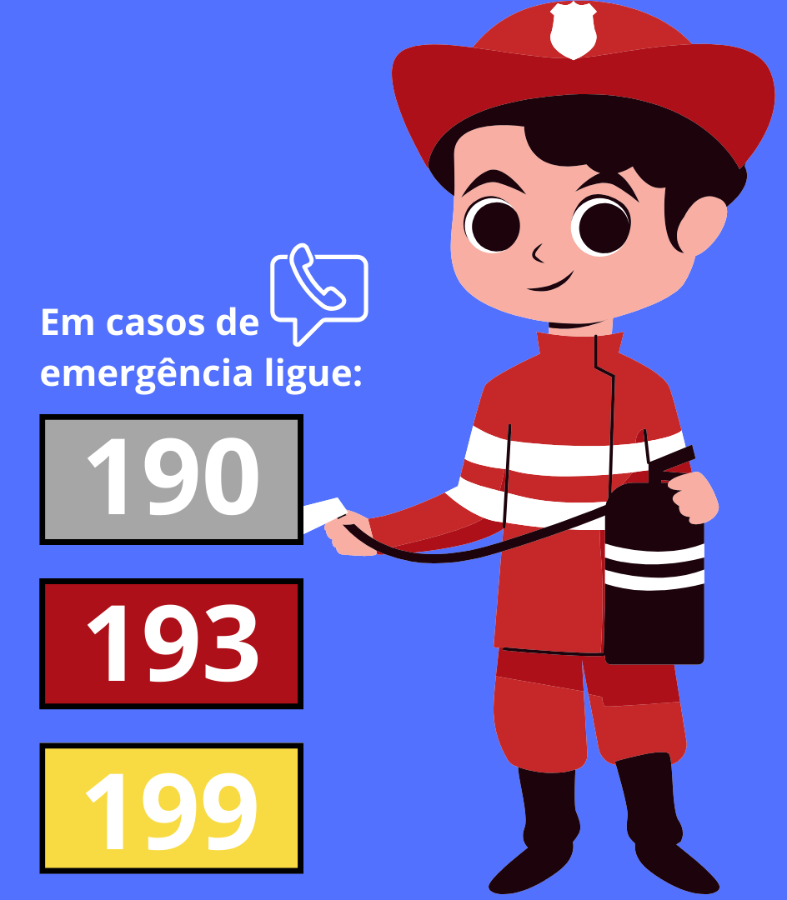
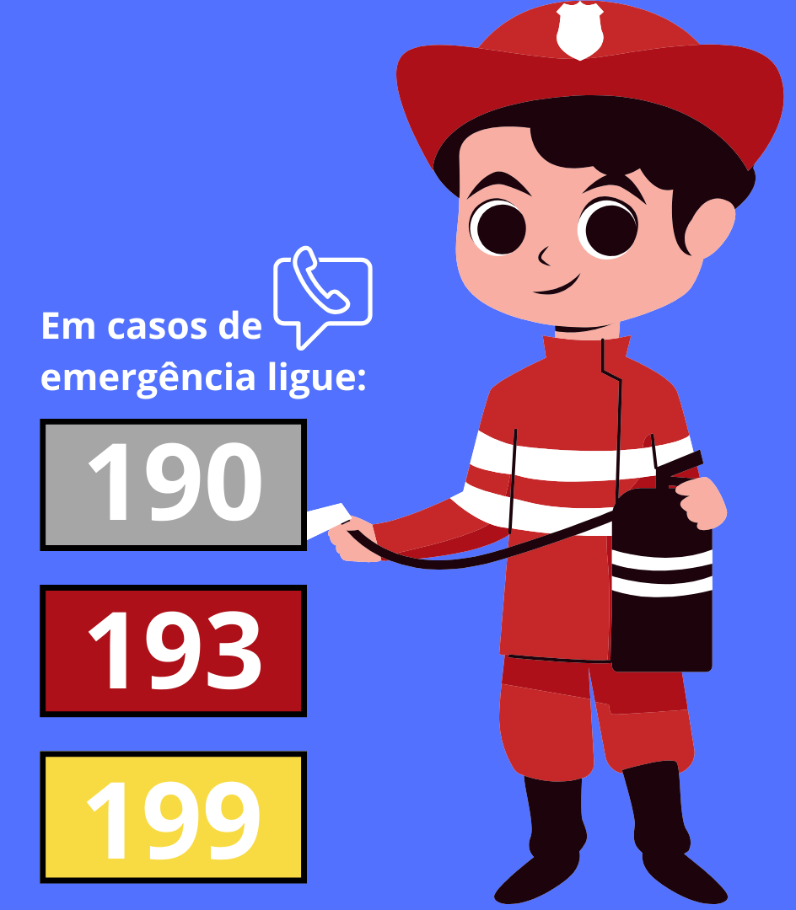

Alagamentos são eventos climáticos que podem resultar em sérios prejuízos para a sociedade, incluindo riscos à segurança das pessoas, danos à propriedade e impactos econômicos. Portanto, é essencial que as autoridades públicas adotem medidas proativas para minimizar esses riscos e garantir uma resposta eficaz quando ocorrerem alagamentos. Abaixo estão alguns pontos-chave sobre a gestão pública de alagamentos:
Planejamento Urbano Sustentável: Um dos aspectos mais críticos da gestão de alagamentos é o planejamento urbano. As autoridades públicas devem promover o desenvolvimento urbano sustentável, incluindo o uso de áreas de inundação, para minimizar o risco de alagamentos.
Infraestrutura de Drenagem: A gestão pública deve investir na infraestrutura de drenagem, como sistemas de escoamento de água pluvial, canais e reservatórios, a fim de direcionar adequadamente a água da chuva e evitar inundações.
Infraestrutura de Drenagem: A gestão pública deve investir na infraestrutura de drenagem, como sistemas de escoamento de água pluvial, canais e reservatórios, a fim de direcionar adequadamente a água da chuva e evitar inundações.
Alertas e Preparação: As autoridades públicas devem estabelecer sistemas de alerta precoce para informar os cidadãos sobre condições climáticas adversas e alagamentos iminentes, permitindo que eles se preparem ou evacuem áreas de risco.
Manutenção da Infraestrutura: A gestão pública deve manter a infraestrutura de drenagem regularmente, garantindo que ela esteja em boas condições de funcionamento para evitar alagamentos desnecessários.
Zoneamento e Regulamentações: Através de regulamentos de zoneamento e ordenamento do território, as autoridades públicas podem controlar o uso do solo em áreas propensas a alagamentos, garantindo que novas construções sigam padrões de construção resistentes a inundações.
Resposta a Emergências: Em caso de alagamentos, as agências governamentais devem coordenar respostas de emergência, incluindo a evacuação de áreas em risco, o fornecimento de abrigo e assistência humanitária às pessoas afetadas.
Educação e Conscientização: A gestão pública também deve investir em programas de educação e conscientização pública para informar os cidadãos sobre como se proteger e como contribuir para a prevenção de alagamentos.
Integração e Colaboração: É crucial que as diferentes esferas do governo, bem como agências e órgãos públicos, trabalhem em conjunto para garantir uma gestão eficiente de alagamentos.